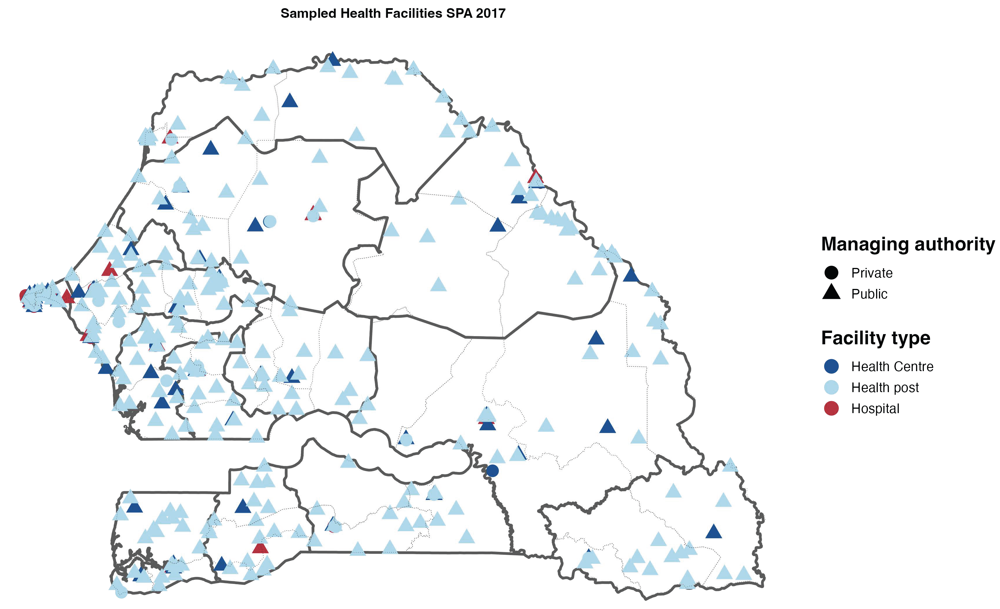

Answering Social Research Questions with Statistical Modelling
April 30, 2025
\(N = 4\), possible responses \(y_1, y_2, y_3, y_4\).
There are 6 possible samples of size \(n=2\): \(\{y_1, y_2\}\), \(\{y_1, y_3\}\), \(\{y_1, y_4\}\), \(\{y_2, y_3\}\), \(\{y_2, y_4\}\), \(\{y_3, y_4\}\)
The sample space of \(S\) is:
\[ S(\Omega) = \left(\{1, 2\}, \{1, 3\}, \{1, 4\}, \{2, 3\}, \{2, 4\}, \{3, 4\}\right) \]
Note:
If Simple Random Sampling, each sample \(s \in S\) has probability \(\frac{1}{6}\)
Each individual, \(k \in S\) has probability \(\pi_k = \frac{1}{2}\) of being selected
Simple Random Sampling is one type of probability samples
The Service Provision Assessment (SPA) is a health facility survey
In each stratum, health facilities are selected using simple random sampling
SPA provides design weights associated with each facility in the sample

Fundamental idea of design-based inference: weight each unit \(k\) based on the number of units they represent in the population
\(y\) values are fixed; the particular sample of units selected (\(S\)) is random
For each unit \(k \in S\), define its design weights: \(w_k = \frac{1}{\pi_k}\)
The classic estimator for the unobserved population mean (\(\overline{y}_U\)) is the weighted mean (Horvitz-Thompson):
\[ \widehat{\overline y}^{HT} = \frac{\sum_{k\in S}w_k y_k}{\sum_{k\in S}w_k} \]
Unbiasedness under SRS
\[ \widehat{\overline y}^{HT} = \frac{\sum_{k\in S}w_k\,y_k}{\sum_{k\in S}w_k} \]
\[ = \frac{\sum_{k\in S}\frac{N}{n}\,y_k}{\sum_{k\in S}\frac{N}{n}} = \frac{\sum_{k\in S} y_k}{n} = \underbrace{\overline{y}}_{\text{the sample mean!}} \]
\[ E\bigl[\widehat{\overline y}^{HT}\bigr] = E[\overline{y}] = \overline{y}_U \quad\square \]
Proof of unbiasedness for stratified and cluster random sampling here
Variance \[ V(\overline{y}) = \left(1 - \frac{n}{N}\right) \frac{S^2}{n} \]
\[ \text{where } S^2 = \frac{1}{N-1} \sum_{k=1}^N (y_k - \overline{y}_U)^2 \]
Asymptotic Confidence Interval
For \(n\), \(N\), and \(N-n\) “large enough”, a 95% asymptotic CI for \(\overline{y}_U\) is:
\[ \begin{split} \overline{y} \pm 1.96 \sqrt{1 - \frac{n}{N}} \times \frac{s}{\sqrt{n}} \end{split} \]
In the model-based view, \(Y_1, \dots, Y_N\) are iid from a hypothetical distribution. For instance, \(Y_{k, k = 1 \dots n} \sim N(\mu, \sigma^2)\)
As an estimator of \(\mu\), we may take is the sample mean:
\[ \widehat{\mu} = \frac{1}{n} \sum_{k=1}^{n} Y_k \]
Unbiasedness
\[ \begin{split} E[\widehat{\mu}] &= E[\frac{1}{n} \sum_{k=1}^{n} Y_k] = \frac{1}{n} \sum_{k=1}^{n} \overbrace{E[Y_k]}^{= \mu} = \frac{1}{n} \sum_{k=1}^{n} \mu = \mu \end{split} \]
Variance
\[ V\!\bigl[\widehat{\mu}\bigr] = V\!\Bigl[\tfrac{1}{n}\sum_{k=1}^{n}Y_k\Bigr] \underbrace{=}_{\text{iid}} \tfrac{1}{n^2}\sum_{k=1}^{n}\underbrace{V[Y_k]}_{=\sigma^2} \]
\[ = \tfrac{1}{n^2}\sum_{k=1}^{n}\sigma^2 \]
\[ = \tfrac{\sigma^2}{n} \]
\[ s^2 = \frac{1}{n-1} \sum_{k=1}^{n}(y_k - \widehat{\mu})^2 \]
\[ \widehat{\mu} \pm 1.96 \frac{s}{\sqrt{n}} \]
Sample labels \(S\) are random
Responses \(y_k\) are fixed
Advantage: Minimal model assumptions
Drawback: Inefficient for small \(n\)
Sampled units are fixed
Responses \(Y_k\) are random
Advantage: Handles small \(n\) & some non‑probability data
Drawback: Biased if the model is misspecified
Simple random sampling (SRS)
Stratified sampling
Cluster sampling
In many designs, \(\sum_{k \in S} w_k = N\), such that:
\[ \widehat{\overline y}^{HT} = \frac{1}{N} \sum_{k \in S} w_k y_k \]
\[ = \frac{1}{N}\sum_{k=1}^N E[I_k]\,w_k\,y_k = \frac{1}{N}\sum_{k=1}^N \pi_k \frac{1}{\pi_k} y_k \]
\[ =\frac{1}{N}\sum_{k=1}^N y_k = \overline{y}_U\quad\square \]